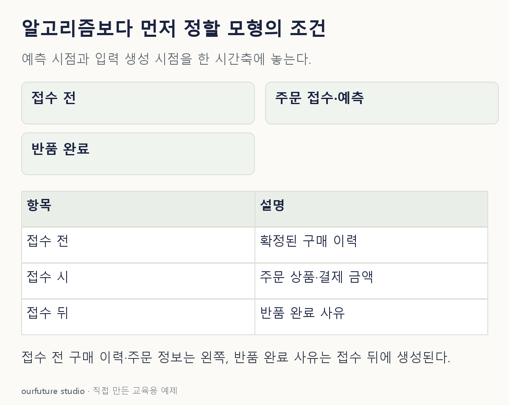

핵심 이론
모형 설계의 시작은 “좋은 알고리즘을 고르자”가 아니라 예측 대상과 사용 시점을 정하는 것이다. 주문 접수 순간에 반품을 예측한다면 목표는 이후 일정 기간 안의 반품 여부이며 입력은 접수 때 확보할 수 있는 자료여야 한다.
목표변수의 관찰 기간, 데이터 단위, 입력의 생성 시점, 결측 처리와 평가 기준을 기록하면 분석을 재현하고 운영 조건을 점검할 수 있다. 과거 파일에 열이 존재한다는 이유만으로 실제 예측 시점에도 그 값을 사용할 수 있는 것은 아니다.
업무 목적과 제약을 정한 뒤 적절한 모형 후보를 비교한다. 비교 전에 주된 평가 기준을 정하고, 최종 시험 결과를 반복해서 보며 후보를 고르지 않는다. 이 문항은 개별 알고리즘 계산이 아니라 사용 가능한 입력과 목표를 정의하는 설계 판단을 다룬다.
작은 예제로 확인하기
주문 접수 시점의 반품 예측을 설계한다.
| 후보 입력 | 접수 때 확보 가능? |
|---|---|
| 주문 상품·결제 금액 | 예 |
| 접수 전 이용 이력 | 조건을 정하면 예 |
| 반품 완료 사유 | 아니오 |
반품 완료 사유는 목표가 발생한 뒤 생긴다. 과거 분석에서 예측이 잘돼 보여도 접수 순간에 입력할 수 없다. 접수 전 구매 횟수도 “접수 시각 이전까지의 기록”으로 계산해야 한다. 전체 기간의 구매를 미리 합치면 접수 이후 정보가 섞인다. 사후 분류로 목적을 바꿀 때는 무엇을 분류하는지도 새로 적는다. 예측할 정답 자체를 입력으로 주고 잘 맞혔다고 보고하는 순환은 목적 변경만으로 정당화되지 않는다.
그림으로 확인하기

직접 고르기
주문 접수 순간에 반품을 예측한다.
그때 입력으로 쓸 수 없는 값은?
- 1. 주문 상품
- 2. 결제 금액
- 3. 접수 전 구매 횟수
- 4. 반품 완료 사유
정답과 오답의 이유 확인하기
정답 4번 — 반품 완료 사유
반품 완료 사유는 예측 이후에 생기므로 접수 시점의 입력으로 사용할 수 없다.
- 1번은 접수한 주문에 포함된 정보다.
- 2번은 접수 시 확보되는 결제 정보다.
- 3번은 접수 전까지 확정된 기록을 사용한다는 조건에서 가능하다.
조건 하나 바꾸어 풀기
반품 완료 뒤 작성한 자유 서술문을 배송·품질·단순 변심 같은 별도 검토 범주로 분류한다. 입력은 서술문이고 정답은 별도 기준으로 부여한 범주다. 이 새 목적에서도 주문 접수 때와 같은 시점 판단을 적용해야 하는가?
풀이: 사유 기록의 사용 가능성을 새 목적에 맞추어 판단한다.
자료의 적합성은 열 이름 자체가 아니라 목표·사용 시점·입력 조건의 관계로 정한다.
다시 떠올릴 단서
그 값을 예측하는 순간에도 알 수 있는가.
근거와 적용 조건
- IBM: CRISP-DM View — 업무 요구·목표 수집과 CRISP-DM 프로젝트 기록. 확인일 2026-10-30.
- NIST: AI Risk Management Framework — 설계·개발·사용·평가 전반의 위험 관리와 자발적 프레임워크 설명. 확인일 2026-10-30.
상황·수치·보기·조건 변경은 자체 교육 예제다. 민간 복원 문항의 공식 정답이나 실제 성능·학습 효과를 뜻하지 않는다.
읽은 내용을 적용해 보기
시점 확인만으로 누수·개인정보·모형 타당성 전체가 보장되지 않는다.